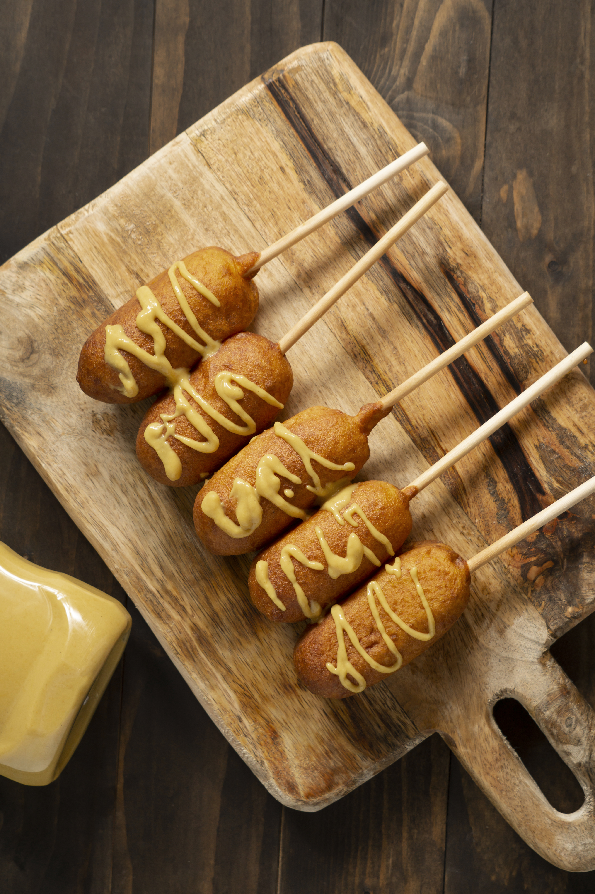

A corn dog is a hot dog or sausage on a wooden stick that is coated in a thick cornmeal batter and deep-fried until crisp and golden brown. It is traditionally served hot and often dipped in condiments like ketchup, mustard, or a dusting of sugar.
Pat each hot dog dry with a paper towel. Thread each hot dog onto a 6-inch skewer, leaving about 2 inches of the skewer as a handle.
Lightly sprinkle the hot dogs with cornstarch. Using your fingers, rub the cornstarch evenly over the hot dogs to form a very light coating. Set aside.
Whisk together the cornmeal, flour, sugar, baking powder, salt and red pepper in a medium bowl. Whisk together the milk, vegetable oil, honey and egg in another bowl. Add the milk mixture to the cornmeal mixture and whisk until smooth. Let stand at least 5 minutes.
Add vegetable oil to a Dutch oven to a depth of about 2 1/2 inches. Heat over medium heat until the oil reaches 350°.
While the oil heats up, transfer the batter to a tall glass that is taller than the hot dogs. Working with one hot dog at a time, dip the hot dog into the batter, twisting it to coat it completely with the batter. While still twisting, remove the hot dog from the batter and lower it diagonally in the hot oil, twirling it by the stick for 5 seconds to set the coating. Let go of the stick and fry until the hot dog is browned on all sides, turning with tongs, about 3 minutes. (You can fry up to 3 corn dogs at a time depending on the size of your pot, just be careful to avoid overcrowding the pan.) Remove from the hot dogs from the oil and place on a paper towel lined plate. Repeat with the remaining hot dogs.
Serve corn dogs with mustard and ketchup.